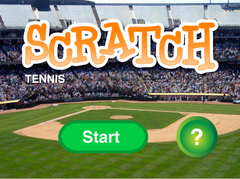
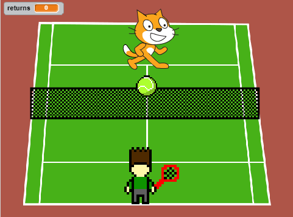
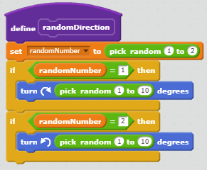

Scratch Tennis
 Overview
A tennis simulator. You hit a ball and a cat returns it. Repeat. You get points for every ball you hit. Where the balls land has a degree of randomness. With each return, the ball gets faster. The game ends when the ball goes out.
Reflection
I made the game because as a hobbyist tennis player, I feel very
inspired to create the game that I enjoy very much.
Two
successful points were:
- The return system for the game was very fluid. The racquet would hit the ball at a very predictable manner
- The tennis court and movement look very realistic and 3D.
Two obstacles I solved were:
- The opponent couldn't be stationary because they would make the game less interactive, but I could not program a game win because it would add compelexity. I needed to add the illusion being able to win with the cat being able to easily deflect any ball.
- The returns were difficult to program because I needed to add a degree of randomness, but not too much that the player would be constantly moving across the screen.
These are the blocks responsible for the return mechanism. It is an algorithim because it is a series of commands. It works by when the racket touches the ball, it tells the ball to make a sound, move towards a slightly random direction, and move until it either touches the cat or is out.
3 Little Gremlins
The player can take the point of view as one of three gremlins who attempt to journey far from their mother's home. They make choices in a twisted version of the classic "The 3 Little Pigs". It's a choose-your-own-adventure story where the user faces frequent obstacles in their journey to find a place to call home.

The incremental and iterative development processes of my program include the use of Google Drawings in order to sequentially develop the scenes of my story and the use of functions in order to isolate each scene in Python. Google Drawings was used to plan each scene and label the order the user would have to follow in order to reach an ending. In Python, each function would be its own individual scene and could branch out to other functions. We would then run the program and attempt to reach each ending. The isolation of each function meant that we would have to run each function in order to read any error messages. If any were found (many due to simple mistakes such as forgetting a quotation mark), the function would have to be revised. It was difficult to enable the user to have enough control over the story without making the story unnecessarily complex, so we attempted to compromise with as many decisions as possible.
The organization of scenes of my story is a form of procedural abstraction because the functions can be diverted into multiple scenes. The advantages of abstracting your scenes into functions are that each scene is isolated from one another allowing for easy manipulation of each individual scene: being able to remove or add as many scenes as possible without disrupting the flow of the story.
A story I particularly liked was Ziggy’s due to the absurdist humor present in the story. In addition to that, I really appreciated Adventure Time because it references a very well-made cartoon show.